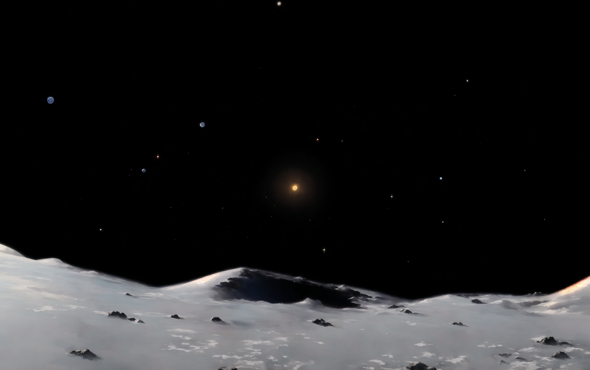
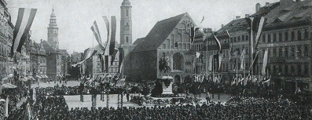
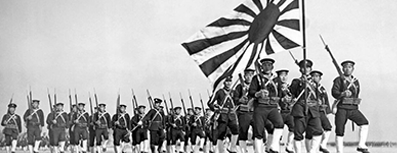

連合国の失策により、第二次世界大戦を勝利で終えたドイツは総統アドルフ・ヒトラーのもと、地球最強の国として君臨している。しかし戦争経済から脱せなかったことによる経済破綻は国を十年以上停滞させ、アーリア人の理想郷のために「劣等人種」を搾取・殺戮する構造はライヒの内側を憎しみで満たした。かつての戦友、日本とイタリアはもはや仲間ではない。我々は冷戦での優位性をつかむために月面基地を作る「プロジェクト・ルナ」へと希望を託した。大丈夫、ドイツの鷲はまだ飛べる。

ハワイに落とした一発の原子爆弾は、アジアの新たな盟主を決めた。太平洋の覇権を獲得した日本は世界最大の海軍を持ち、強大な経済圏をアジアに築いている。しかし肥大化した財閥による独占体制は経済を停滞へと導き、共栄圏の諸国は日本の搾取に反乱の火種を起こしつつある。そして最大の敵アメリカはまだ諦めていない。フィリピン内戦が終わらないのは彼らの介入のせいだ。軍事技術の優位性を示すために月面基地を作る計画を実行に移す時が来た。大丈夫、まだ太陽は我々を照らしている。